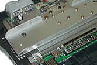

|
 |
『スーパーマリオ64』で、マリオは延々とフィールド上を走り回ることができます。CD-ROMなら、どこかでデータの読みこみのために止まるはずなのですが。また『マリオカート64』では、コースを選ぶと瞬時にそのコースで走ることができます。CD-ROMなら、選択されたコースのデータを探し、読み込むまでに時間がかかり、走るまでの待ち時間があるはずです。この、シークタイムがゼロというマジックの実現には、ゲームカセット側にも、本体側にも秘密があります。とにかく、データ転送速度が速いんです。
カセットに搭載されている、半導体マスクROMのデータ転送スピードは、１秒間に5.3メガバイトです。このスピードは、なんとCD-ROMのおよそ36倍速に相当します。本体の電源を入れてから、ゲームが画面に呼び出されるまでは２秒くらいですし、なにしろシークタイムがないのですから、イライラしません。
また本体側には、250MHzのRANBUS DRAMを内蔵しています。現在主力のＰＣですら、データ転送速度は100MHzそこそこということを考えると、驚異的でしょう？ ここまでの速度のマシンを大量生産している例は、ほかにはありません。
|